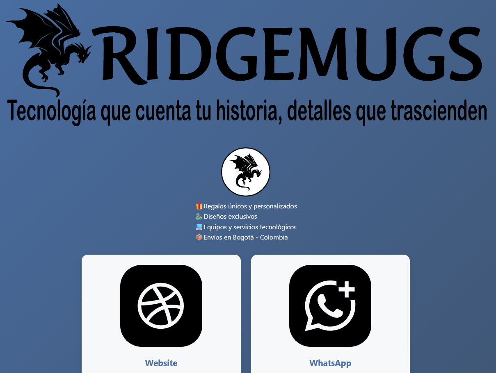

Analista de Soporte TI · años de trayectoria
6 años de experiencia formal · Sector financiero y Data Centers
Disponible para roles de Soporte N1/N2 · Especialización en Automatización RPA e IA

6 años de experiencia formal · Sector financiero y Data Centers
Disponible para roles de Soporte N1/N2 · Especialización en Automatización RPA e IA

Mi carrera en el sector tecnológico comenzó en abril de 2011, de manera independiente. Desde entonces, he acumulado más de años de experiencia, de los cuales 6 años corresponden a trabajo formal y certificado en empresas de primer nivel.
Mi experiencia formal se ha centrado en el soporte técnico presencial y remoto, diagnosticando y resolviendo fallos de hardware, software y sistemas operativos (Windows, Linux, macOS). He trabajado en entornos críticos como el sector financiero y Data Centers, donde la continuidad operativa es prioridad. Mis conocimientos en redes están orientados al soporte práctico, con enfoque en troubleshooting de conectividad y cableado básico.
Mi rumbo profesional está claramente definido hacia la Automatización de Procesos y la Inteligencia Artificial. Por ello, curso Ingeniería Informática y desarrollo activamente mi especialización en RPA (UiPath), Python e IA Generativa, ampliando mis competencias para diseñar soluciones que optimicen flujos de trabajo.
Disponibilidad inmediata: Estoy en plena capacidad para aportar mi experiencia en roles de Soporte Nivel 1 y 2, con la seguridad de agregar valor desde el primer día y la ambición de crecer en automatización.
Adicionalmente, poseo conocimientos básicos en Lengua de Señas Colombiana (LSC), reflejando mi compromiso con la accesibilidad y la comunicación inclusiva.
Soporte presencial a entidades financieras. Resolución de incidencias de hardware y software. Colaboración con IBM en mantenimiento de equipos.
Seguimiento telefónico de alarmas de antenas. Gestión y escalamiento de incidencias a equipos técnicos. Rol backoffice, sin manipulación de equipos en campo.
Monitoreo de servidores y equipos en Data Center. Instalación y configuración de software en sistemas corporativos.
Coordinación de equipos en despliegues de redes LAN/WiFi y mantenimiento de equipos de cómputo. Gestión de inventarios.
Asistencia técnica general y despliegues básicos de redes LAN/WiFi en unidades militares. Mantenimiento de equipos.
Trayectoria independiente y continua en soporte tecnológico desde 2011.
Proyectos de desarrollo frontend construidos. Próximamente, proyectos de automatización.

Portafolio personal responsivo con HTML, CSS y JS. Despliegue en GitHub Pages.
